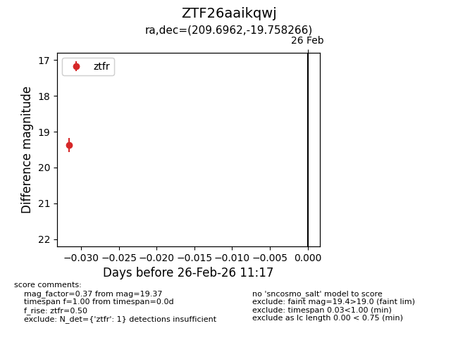
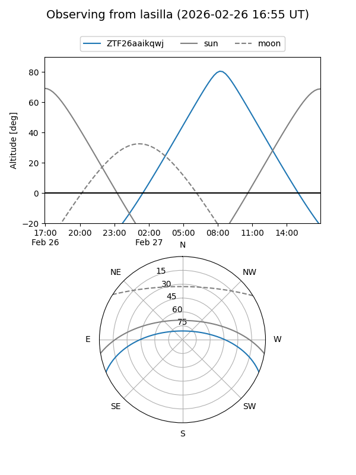
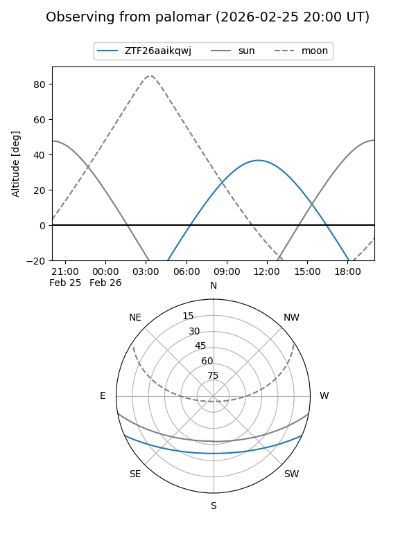

ZTF26aaikqwj
Target ZTF26aaikqwj at 2026-02-26 11:18
Aliases and brokers:
FINK: link
Lasair: link
ALeRCE: link
alt names
ZTF26aaikqwj (ztf,fink_ztf)
Coordinates:
equatorial (ra, dec) = 209.6962,-19.75827
equatorial (HMS+DMS) = 13:58:47.08,-19:45:29.76
galactic (l, b) = (323.8921,+40.35650)
Flags:
Photometry:
last ztfr=19.37
1 ztfr detections
Lightcurve

Visibility


Additional plots